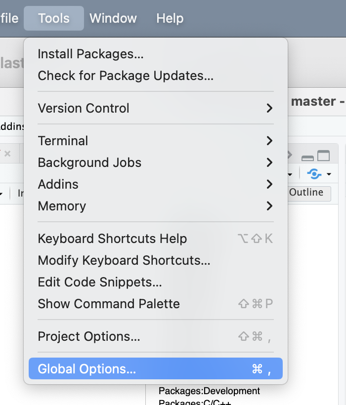

RStudio preference setup 2022
Setup preferences in R Studio
We set up the RStudio preferences so that we all work in an identical environment.
Select Preferences.. from the File menu.

The Global Options… are now on the Tools menu for both windows and macos.

General:Basic

General:Graphics

General:Advanced

Code:Editing

Code:Display

Code:Saving

Code:Completion

Code:Diagnostic

Console

Appearance
What font to use is up to you, but use a fixed-width font. I like fira-code. Courier or Monaco are good alternatives.

Pane layout 1

Pane layout 2

Packages:Management

Packages:Development

Packages:C/C++

R Markdown:Basic
See rmarkdown-cookbook chapter 16 for details. We select “Document” for where to evaluate chunck, hence our “working directory will be the directory where our R Notebook is placed.

R Markdown Advanced

R Markdown Visual

R Markdown Citations

R Markdown Quarto

Python

Sweave

Spelling

Choose Install More Languages...from the Main dictionary language: drop-down menu. Norwegian should now be in the menu.
Git/SVN
We are only going to use Git so SVN is not to important.

Publishing

Terminal:General

Terminal:Closing

Accessibility:General

Accessibility:Announcements